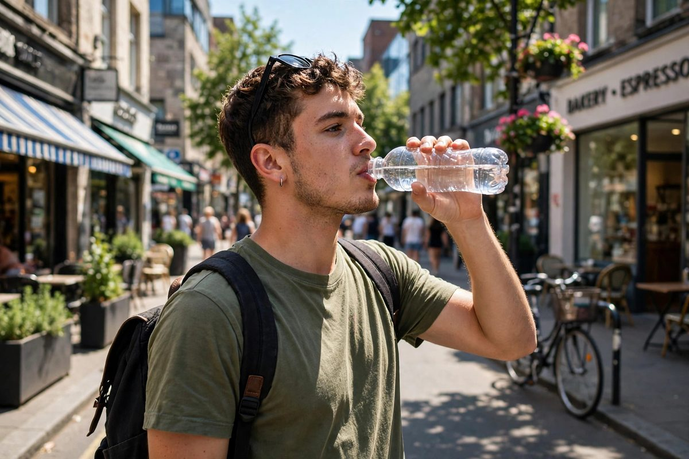

Water Intake in a Hot Climate
How heat raises your water needs, how to adjust your target, and practical tips for staying hydrated in hot weather.
Hot weather raises water needs sharply, because sweat is the body's main cooling system and it works overtime in the heat. A target that is right in a temperate climate can be far too low on a hot day, and the gap shows up as headache, tiredness and dark urine. This guide explains how heat changes the numbers and how to stay hydrated when the temperature climbs.
How heat changes the maths
Above about 30 degrees Celsius, sweat losses rise steeply, and above 35 degrees they can exceed a litre an hour during activity. Even at rest indoors, a hot day adds several hundred millilitres to daily needs. Our climate calculator adds roughly 40 ml for each degree above 30, plus more for humidity and time outdoors, which gives a planning figure. As a rough guide, add about 500 ml to your normal target on a hot day, and about a litre on a very hot day, then adjust from how you feel.
Humidity makes it worse
Humidity matters as much as temperature, because sweat only cools you when it evaporates. In humid air, sweat sits on the skin instead of evaporating, so the body produces more of it to achieve the same cooling, and you lose more water for the same effort. A humid 32 degrees can be harder on hydration than a dry 38 degrees. In humid heat, drink regularly on a schedule rather than waiting for thirst, because thirst lags behind loss, and rest in shade or air conditioning when you can.
Practical tips for hot days
Carry water everywhere and sip regularly, aiming for a glass every hour or so during the hottest part of the day. Eat water-rich foods such as fruit, salads and yoghurt, which add fluid without effort. Wear light, loose clothing and a hat outdoors, and plan outdoor work or exercise for the cooler morning or evening. Avoid alcohol in the heat, because it increases water loss, and be cautious with very cold drinks in large volumes, which can cause stomach discomfort.
Watch for heat illness
Dehydration and heat illness go together. Early signs include headache, dizziness, tiredness, muscle cramps and dark urine. More serious signs include confusion, hot dry skin, a rapid pulse, and nausea. If you notice these, move to a cool place, drink water steadily, cool the skin with wet cloths, and seek medical help if symptoms do not improve quickly. Older adults, children, and people working outdoors are most at risk, and they need extra attention on hot days.
Adjusting your routine
On hot days, shift your schedule: drink a large glass on waking, carry a bottle, and set a reminder to drink every hour. Keep a bottle by your bed, because hot nights also cost water through sweating. If you exercise, move it to the morning or evening, drink before, during and after, and consider a sports drink or salty snack for long sessions. Check your urine colour through the day: pale straw means the plan is working, dark yellow means drink more now.
A hot day, planned hour by hour
Take a day at 35 degrees with two hours outdoors in the afternoon. Start with a large glass on waking, and carry a 1 litre bottle. Drink a glass every hour in the morning, more in the afternoon when you are outdoors, and a glass with each meal. By evening, you will have drunk about 3 to 3.5 litres, which is right for the day. Rest in shade during the hottest hours, wear a hat and light clothing, and eat water-rich foods such as fruit and salad. Check your urine colour at midday: if it is dark, drink more now, do not wait. The plan is not heroic; it is steady drinking, shade, and attention, and it keeps a hot day safe without any special equipment.
Frequently Asked Questions
How much extra water do I need in hot weather?
Roughly an extra 500 ml on a hot day and a litre on a very hot day, plus more for exercise or time outdoors.
Does humidity affect water needs?
Yes. In humid air, sweat evaporates poorly, so the body sweats more. Humid heat can be harder on hydration than dry heat.
What are the signs of heat illness?
Headache, dizziness, cramps and dark urine early on; confusion, hot dry skin and rapid pulse are more serious and need prompt cooling and medical help.